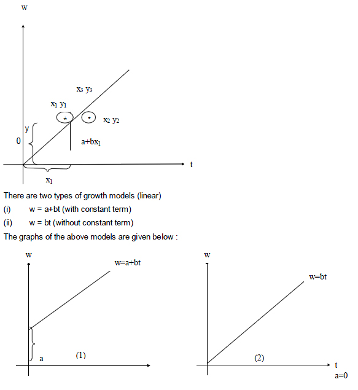
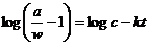

MATHS :: Lecture 18 :: Population Dynamics

Population Dynamics
Definition
Model
A model is defined as a physical representation of any natural phenomena
Example: 1. A miniature building model.
2. A children cycle park depicting the traffic signals
3. Display of clothes on models in a show room and so on.
Mathematical Models
A mathematical model is a representation of phenomena by means of mathematical equations. If the phenomena is growth, the corresponding model is called a growth model. Here we are going to study the following 3 models.
1. Linear model
2. Exponential model
3. Logistic model
Linear model
The general form of a linear model is y = a+bx. Here both the variables x and y are of degree 1. In a linear growth model, the dependent variable is always the total dry weight which is noted by w and the independent variable is the time denoted by t. Hence the linear growth model is given by w = a+bt.
To fit a linear model of the form y=a+bx to the given data.
Here a and b are the parameters (or) constants to be estimated. Let us consider (x1,y1),(x2 , y2)… (xn , yn) be n pairs of observations. By plotting these points on an ordinary graph sheet, we get a collection of dots which is called a scatter diagram.
In a linear model, these points lie close to a straight line. Suppose y = a+bx is a linear model to be fitted to the given data, the expected values of y corresponding to x1, x2…xn are given by (a+bx1) , (a+bx2),…(a+bxn). The corresponding observed values of y are y1, y2……yn. The difference between the observed value and the expected value is called a residual. The Principles of least squares states that the constants occurring in the curve of best fit should be chosen such that the sum of the squares of the residuals must be a minimum. Using this for a linear model we get the following 2 simultaneous equations in a and b, given by
Sy = na+bSx --------------------------- (1)
Sxy = aSx+bSx2 -------------------------(2)
where n is the no. of observations. Equations 1 and 2 are called normal equations. Given the values of x and y, we can find Sx, Sy, Sxy, Sx2. Substituting in equations (1) and (2) we get two simultaneous equations in the constants a and b solving which we get the values of a and b.
Note: If the linear equation is w=a+bt then the corresponding normal equations become
Sw = na + bSt ------- (1)
Stw = aSt + bSt2 --------(2)
Problem
The table below gives the DMP(kgs) of a particular crop taken at different stages; fit a linear growth model of the form w=a+bt, and also calculate the estimated value of w.
t (in days) ; |
0 |
5 |
10 |
20 |
25 |
DMP w: (kg/ha) |
2 |
5 |
8 |
14 |
17 |
2. Exponential model
This model is of the form w=aebt where a and b are constants to be determined
Growth rate =
Relative growth rate =
Here RGR = b which is also known as intensive growth rate or Malthusian parameter.
To find the parameters ‘a’ and ‘b’ in the exponential model first we convert it into a linear form by suitable transformation.
Now w = aebt ----------------------(1)
Taking logarithm on both the sides we get
logew = loge(aebt)
logew = logea + logeebt
logw = logea + bt logee
log w = logea + bt
Y = A + bt -------------------------(2)
Where Y = log w and A = logea
Here equation(2) is linear in the variables Y and t and hence we can find the constants ‘A’ and ‘b’ using the normal equations.
SY = nA + bSt
StY = ASt + bSt2
After finding A by taking antilogarithms we can find the value of a
Note
The above model is also known as a semilog model. When the values of t and w are plotted on a semilog graph sheet we will get a straight line. On the other hand if we plot the points t and w on an ordinary graph sheet we will get an exponential curve.
Problem: Fit an exponential model to the following data.
t in days |
5 |
15 |
25 |
35 |
45 |
W in mg per plant |
0.05 |
0.4 |
2.97 |
21.93 |
162.06 |
3. Logistic model (or) Logistic curve
The equation of this model is given by  ------------- (1)
------------- (1)
Where a, c and k are constants. The above model can be reduced to a linear form as follows:
Taking logarithm to the base e,

Y = A + Bt ------------------- (2)
Where Y =
A = logec
B = - k
Now the equation (1) is reduced to the linear form given by equation (2) using this we can determine the constants A and B from which we can get the value of the constants c and k.
Problem
The maximum dry weight of groundnut is 48 gms. The following table gives the dry matter production w of groundnut during various days estimate the logistic growth model for the following data.
t in days |
25 |
45 |
60 |
80 |
105 |
DMP w in gm/plant |
5.0 |
13.5 |
23.6 |
36.6 |
45.0 |
| Download this lecture as PDF here |